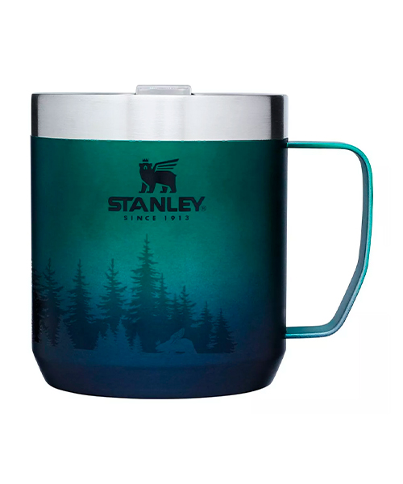

Sobre nosotros
La marca Stanley tiene una historia de más de 100 años. Nacida del creador William Stanley Jr., quien cambió para siempre la forma en que se consumían las bebidas calientes. En 1913 fusionó el aislamiento al vacío y la fuerza del acero en una botella portátil, inventando el termo de acero inoxidable que hoy conocemos y valoramos. Durante este siglo, el termo evolucionó de concepto a ícono y se ha convertido en una parte esencial de los días de trabajo, los viajes de ruta y las aventuras al aire libre. Nuestra misión es aumentar el tiempo que pases al aire libre, ofreciendo un equipo con el que puedas contar desde el amanecer hasta el atardecer, desde el café para empezar el día hasta que culmine la noche.
Productos
Termo clásico
$110.000
Totalmente a prueba de fugas y capaz de mantener las bebidas calientes durante 40 horas, frías durante 45 horas o con hielo durante 6 días. Con el termo Stanley nunca tendrás que preocuparte de que el agua se enfríe o que tu bebida se caliente.
Vaso Quencher
$120.000
Vaso color rosa de 1.8 litros, su material es acero inoxidable, incluye la tapa y sorbete. Cuenta con doble pared de aislamiento también es libre de BPA y apto para lavavajillas.
Vaso edición limitada
$160.000
Vaso con diseño edición limitada de 1.8 litros, su material es acero inoxidable, incluye la tapa y sorbete. Cuenta con doble pared de aislamiento también es libre de BPA y apto para lavavajillas.
Mate clásico
$60.500
El mate Stanley mantiene la temperatura durante toda la cebada. Es práctico e higiénico. Cuenta con una capacidad de 236ml. Si el producto es comprado en Argentina la garantía es de por vida; siempre y cuando cumpla con los requisitos solicitados.
Vaso termico Camp Mug
$81.500
Nuestra Taza Vaso Térmico Stanley Camp Mug se hace resistente con el aislamiento al vacío de doble pared de Stanley. La tapa segura Tritan de ajuste a presión también evita las salpicaduras. Esta taza está hecha de acero inoxidable resistente. ¡Mantené tus bebidas favoritas a la temperatura ideal hasta por 3 horas de frío y 1,5 horas de calor!
Botella Flowsteady

$88.000
Tiene un diseño ergonómico y el mango giratorio. Además, cuenta con un sistema de control de fluido de líquidos. Cierre a presión para empaquetar a prueba de fugas. Y el aislamiento de doble pared de Stanley mantiene la bebida helada todo el día.
Lunchera All In One Adventure
$104.500
Cuando necesite mantener su sopa caliente o su ensalada de pasta fría, este frasco de comida de 532Ml es justo lo que necesita. Incluso viene con un spork para comer al aire libre. Hay un compartimento oculto en el tapón para evitar que la granola, las nueces y las semillas se empapen.